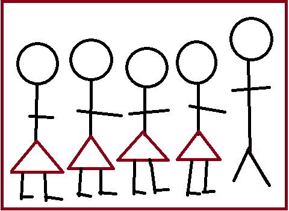

Conectando comunidade escolar e infraestrutura para um ambiente educacional melhor
Uma plataforma inovadora desenvolvida para transformar a gestão de infraestrutura educacional.
O InfraEduca é uma plataforma digital desenvolvida como parte de um Trabalho de Conclusão de Curso (TCC) do Instituto Federal Farroupilha – Campus São Borja. O projeto foi idealizado por Camila do Amaral Ferreira, Giovana Graziadei Gamarra, Leticia Pires Correa e Maiara Escobar do Nascimento, com orientação e apoio do MSc. Prof. Toni Ferreira Montenegro.
Esta plataforma tem como objetivo principal facilitar a comunicação entre a comunidade escolar e a gestão de infraestrutura do campus. Com o InfraEduca, busca-se agilizar e tornar mais acessível o processo de registro e resolução de problemas estruturais, promovendo um ambiente escolar mais seguro, inclusivo e adequado para o processo de ensino e aprendizagem.
O projeto alinha-se aos princípios da Agenda 2030 da ONU, particularmente ao Objetivo de Desenvolvimento Sustentável 4 (ODS 4), que visa garantir uma educação de qualidade, inclusiva e equitativa, em ambientes escolares adequados que favoreçam o bem-estar e o aprendizado de todos os estudantes.
A plataforma contribui diretamente para esse objetivo, oferecendo uma solução prática e eficiente para a identificação e encaminhamento de melhorias na infraestrutura da instituição, criando um ambiente mais digno e acolhedor para toda a comunidade acadêmica.
Soluções práticas para uma comunicação eficiente e ambiente escolar melhor
Permite o envio ágil de informações sobre questões relacionadas à infraestrutura da escola.
Garante um canal de interação eficiente entre os usuários e a gestão de infraestrutura.
Estimula a colaboração de estudantes, professores e funcionários na melhoria do ambiente escolar.
Busca a criação de um espaço seguro e adequado para o desenvolvimento educacional de todos.
Estudantes comprometidas com a melhoria da educação
